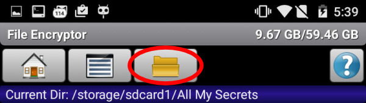

FAQ - Secret Space Encryptor
How can I migrate my data to a new device?
Password Vault:
- The password vault has an export/import function (you can choose between a compressed, fully-encrypted .pwv file format and an unencrypted, editable .xml format).
- For Android 5.0 and higher - standard (system provided) backup/restore features can also be used.
Manual Transfer:
Show more ...
1. Export the vault to a pwv file (use the "more" button in the password vault application) - It will appear in the application import/export directory
(default: [Internal Storage]/SSE/ or [Internal Storage]/Android/media/com.paranoiaworks.unicus.android.sse/ - can be depended on system/application versions);
2. Copy the file to the import/export directory on your new device;
3. Import the file: start Password Vault → cancel password dialog → tap Help me get in! → choose Import Vault → select the file you want to import from the list (names in the list correspond to file names in the import/export directory—if you cannot find your pwv file, it is not located in the correct directory);
Text + File Encryptor:
These applications work with files, so you can backup/transfer it as any other file. The text encryptor's default directory is [Internal Storage]/SSE/Texts/ or [Internal Storage]/Android/media/com.paranoiaworks.unicus.android.sse/Texts/ and ../Steganograms/, The file encryptor saves a new archive into the same directory where the original (unencrypted) file is located (this is done by default). The destination can be changed in Settings → File Encryptor: Encrypted Files Destination).
IMPORTANT NOTES:
1) You can check/change the current import/export directory in the application settings (Settings → Common Settings: Import/Export Path)
2) ../Android//com.paranoiaworks.unicus.android.sse directories will automatically be deleted (a system feature), when the application is uninstalled (make a backup before, if required)
I forgot my password. Can you help me?
No, there is no backdoor. It's the purpose of the application. All data are encrypted (mathematically altered) using the password. Without the password you can't reverse the process and "reconstruct" original data. We can't help you. Nobody can. The correct password is the only way.
Why doesn't the application use fingerprints for file/text encryption and password vault access?
All data are fully encrypted (mathematically altered), and there must be an exact encryption key match to perform decryption. Without a 100% correct key you can't reverse the process and "reconstruct" original data. Fingerprints are usually used for authentication - originals are stored somewhere, and compared during an authentication process - but data are only hidden behind the process. There is no reliable way to use fingerprints for encryption (how to generate a decent encryption key from fingerprints) - only a few unreliable experiments have been carried out thus far. Moreover, fingerprints are not secret and cannot be changed. If someone has a copy of your fingerprints (which is quite easy to obtain for anyone who really wants to—since you literally write your password on everything you touch), all of your data (past, present, future) will be an "open book" for him/her/them. S.S.E. will NEVER use (directly or indirectly) biometric data for ENCRYPTION purposes.
Why can't I use other application(s) that work with the same ciphers? For example AES to decrypt files/texts?
It isn't only about an encryption algorithm, there are many other pieces: encryption mode (CBC, CFB, PCBC, OFB, CRT, CWC, EAX, ...), password processing (KDF - Key Derivation Function), integrity check, file archive type, compression etc... Detailed format specifications can be found here.
I can't decrypt my data, the application says "Invalid password or corrupted data", but I'm 100% sure my password is correct.
A) Probability—more than 99.9%: Your password really is invalid. Avoid mistypes when you try to set/enter your password and remember the correct password for the particular piece of data. Typing errors are quite easy to make on a software keyboard and if you already are in an "incorrect password" situation, please check for missing / swapped / doubled letters, replaced by neighbor / added extra neighbor letters - try all the combinations of keys in the vicinity of your intended key (one by one — it's laborious, but possible in case of single character error — many users have recovered their data using this procedure). Many "100% sure users" have also recalled the correct password eventually (if they tried of course — those who think they never make mistakes prefer to sacrifice their data to this believe).
B) Probability—low: A hardware failure. The application verifies (decrypts) all data (Password Vault and Text Encryptor) and the wider header of .enc files after encryption to avoid calculation or memory errors. Most (unfortunately unpreventable) hardware errors are caused by storage failures. SD cards are usually much less reliable (especially some combinations of devices/SD cards) than internal memory (it can also fail but when you buy a decent device the probability is quite low). Android is an open platform and there are many unreliable devices on the market. If you value your data, stay away from them. Also, be sure to always safely unmount SD cards (and other external storages) before removing.
The application can be easily "cracked" (means "gain PRO version features") by various automatic "patchers". Where are the strong ciphers?
The "strong ciphers" and all encryption capabilities of the application have absolutely nothing to do with anti-piracy protection of the PRO version. There isn't (and will not be) any special anti-piracy protection in this application, because it's complete nonsense. Applications of this type have to be trustworthy and their strongest attributes are: open source, not obfuscated build, fully off-line if possible, etc. All of these go against anti-piracy protections, but make the application much more reliable. Do not consider strengths as weaknesses. This isn't a "money making" project (it would end before it began) and if someone wants to rely on cracked security apps and has a rooted device full of "crackers and patchers", it's his fight and we are ok with that — there's no accounting for taste.
PRO version license: Can I reuse my purchased SSE or do I need to buy it again?
A) Google Play Version: The license is lifetime, and can be used for an unlimited number of devices - as the purchase is bound to your Google (Google Play) account. It will work on an unlimited number of devices (provided that you are logged in with the account that you used for the purchase). The application should be activated automatically on the first start; if not, go to Other Utils → Upgrade to Pro Version and tap the Upgrade to Pro Version button. A warning message should appear (something like "you already own this item") and the application will be activated. You can also activate an unlimited number of desktop versions (more) on all the devices you own.
B) "F" Flavor Version (the original build of the version distributed outside of the Google Play store and activated with an activation key): Similar to the Play Store version — you can use it on all the devices you own (Android + desktop).
In the event that you experience any problems with the activation process, don't hesitate to contact us.
Clipboard Cleaner doesn't work — Why?
This issue is addressed here.
How to charge my phone? How to run applications? What should I do if my phone has fallen into the toilet? etc.
Please use DuckDuckGo, Google (or another search engine) for this type of questions. We are neither a service or training center for Android and for applications from other developers, nor a manufacturer of your phone.
File Encryptor Specific
My file(s) are still visible after an encryption. The application doesn't work or what I am doing wrong?
SSE File Encryptor works as an archiver (a new .enc file is created). You can delete/wipe the original file(s) after the encryption process is completed or it can be done automatically: Settings: File Encryptor → Wipe Source After Encryption
My images/videos (or other documents) have been encrypted/deleted, but I can still see thumbnails in my picture viewer/gallery application. What should I do about it?
There are a number of gallery / picture viewer applications available, so this issue does not have a universal solution. When a picture file is deleted your gallery software still has its own "shrunk" copy of it (thumbnail) and updating this status is up to the gallery software. Thumbnails can be stored (cached) within the gallery software data space (so no other application has permission to access the data). A similar problem can occur with other documents if the target application holds, for example, AutoSave copies of your documents.
Android 4.4 and higher: External SD card (or USB drive) is read only (or is not visible). Message: EACCESS (Permission denied).
Android 4.4+ does not allow direct write access to the external SD card to any app except for preinstalled apps (preinstalled by device, or system image manufacturer). The only solution on Android 4.4 is to root your device and change permissions, on Android 5+ use SAF.

- button
 or
or 
Use Google for more info - search for something like: android 4.4 external card read only
☯ Alternatively ☯
Use (create in case it doesn't exist) the following directory (on your external SD card):
Android/data/
com.paranoiaworks.unicus.android.sse
or
Android/media/
com.paranoiaworks.unicus.android.sse
These folders belong to the application and the application should have write permissions in these folders.
Note: If you uninstall the application, the content of these folders will be automatically deleted (make a backup before that if needed).
Text Encryptor Specific
The text is decrypted even when I change the algorithm in the application settings. How is that possible?
You can set an ENCRYPTION algorithm (the decryption algorithm is detected automatically - information about the used algorithm is part of the application data format).
The application produces a completely different output (using the same input) whenever I tap the encrypt button. How is that possible?
Two words for DuckDuckGo, Google (or some other search engine):
cryptographic salt